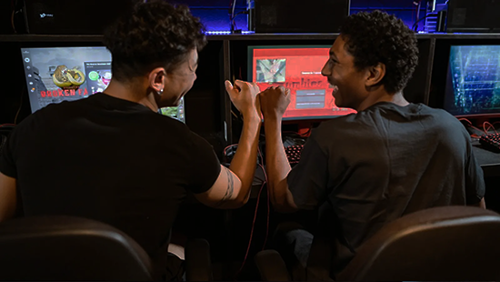
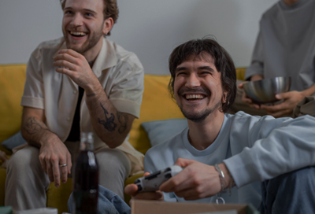
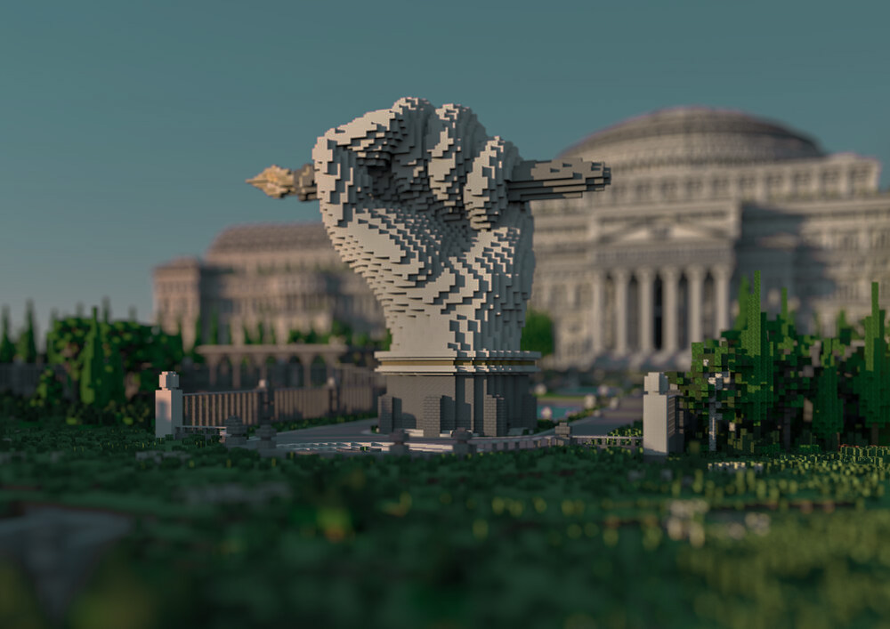

Spel är kultur
Spel är en självklar del av dagens kultur, precis som film, musik och litteratur. De berättar historier, väcker känslor och samlar människor. Det är en modern form av kultur.


För- och nackdelar med spel
Spel kan förbättra problemlösning, reaktionsförmåga och ge upphov till avkoppling, men också vara beroendeframkallande, och påverka sömn och hälsa negativt


Något unikt med spel
Auktoritära regimer censurerar ofta media, men spel har hittills undgått hård kontroll. De kan nå och påverka individer som utsatts för propaganda och visa nya perspektiv som var gömda innan.